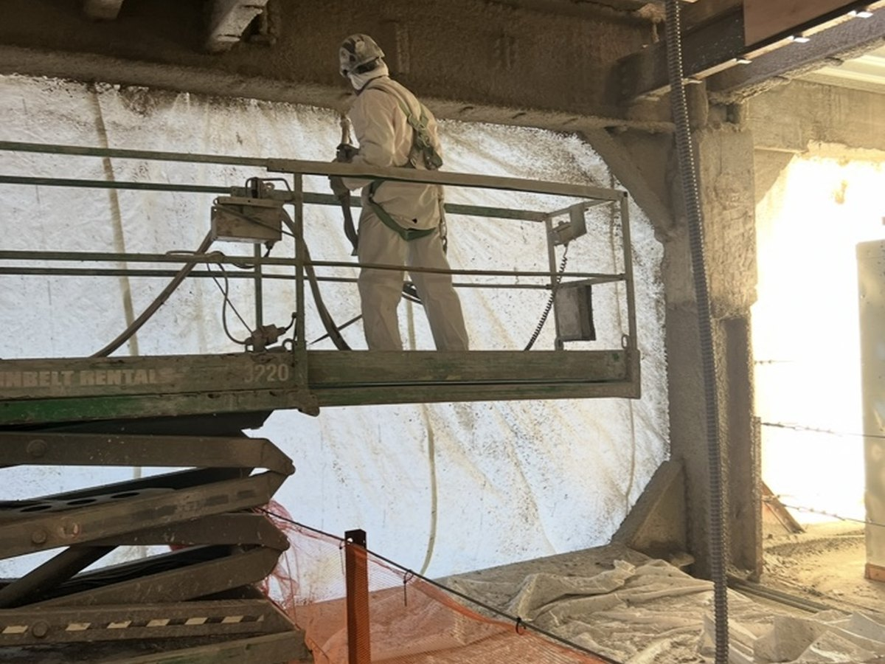
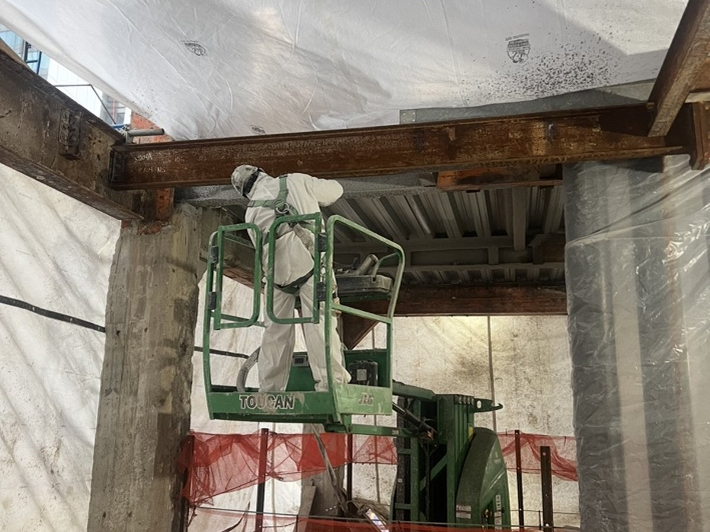
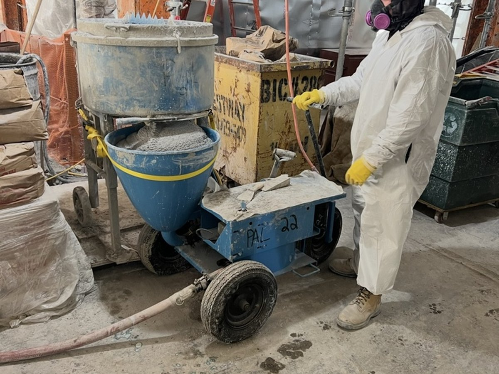
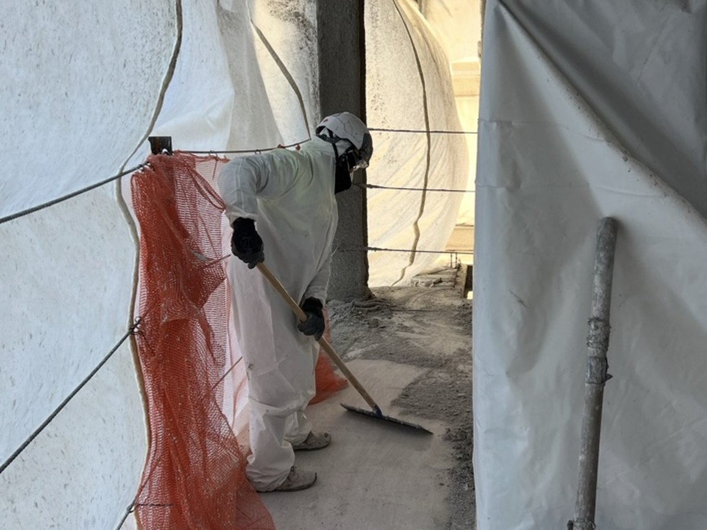

PAL Safety Hub & Jobsite Resources
Quick access to PAL new hire orientation, checklists, toolbox talks, field documents, and project resources. Office, supervisor, and project tools stay protected behind sign-in.




Checklists and Field Forms
Use these forms before work begins, when conditions change, or when a safety issue needs to be documented. Project linking will be added next so completed forms can be reviewed from the protected project dashboard.
Available Forms
Open a form, complete the required fields, sign it, then print, save, or share it from your device.
Coming Next
These are planned employee-facing forms. They are listed here so the homepage structure is ready as the documents are added.
Foreman's Kit
Fast access to the forms most used in the field.
Daily Safety Meeting
Hazards, tasks, locations + crew sign-in
AI Assisted Daily Safety
Type the work plan and generate hazards/controls
Toolbox Talk Sign-In
Weekly sign-in sheet, front and back
Daily Field Report
Crew, work performed, equipment, incidents
Daily Timesheet
Daily worker hours log
Weekly Timesheet - FP
Fireproofing with cost codes
Expense Report
Auto-calculating, print ready
Incident Report
Accident / injury investigation form
Scissor Lift Pre-Use Inspection
Pre-start walk-around, powered checks & workplace
Scaffolding Safety Checklist
Pre-use scaffold inspection - general & special
Full-Body Harness Inspection
Pre-use harness inspection checklist
Site Orientation Form
New hire orientation checklist & sign-off
Drug & Alcohol Consent
Appendix B - consent & signature form
Scaffold / Fall / Ladder Agreement
Safety acknowledgement for new hires
W-4 (Federal)
Employee's withholding certificate
Contents
- Training Records
- PAL Policies
- Goals
- Emergency Action Plan (E.A.P.)
- Personal Protective Equipment (PPE)
- Fall Protection
- Electrical Safety
- Ladder Safety
- Hand & Power Tools
- Lockout / Tagout (LOTO)
- Fire Safety
- Confined Space Entry
- Asbestos & Lead Exposure
- Respirable Crystalline Silica
- Housekeeping
- Scaffolds
- Hazard Communication (HazCom)
- Toolbox Talks
- Quick Reference
- Code of Conduct
- Whistleblower
- Employee Safety & Checklists
At a minimum, all employees must possess the following training records prior to work on any PAL project site:
- OKOSHA 10 Hour certificate (within last 5 years)
- OKScaffold training (i.e. 4 Hour DOB Training)
- OKFall protection training
- OKRespirable Crystalline Silica training
- OKEmployees must be orientated on PAL's policies and procedures and sign off on the acknowledgement form
- OKEmployees must be in attendance for daily safety meetings and weekly toolbox talks with PAL management
PAL Official Policies
Policy 1: PPE Minimum Required
At a minimum, all employees must wear hard hats, eye protection, work gloves and boots.
Policy 2: PPE Required At ALL Times
Required at all times: ANSI approved hardhat, high visibility safety vest, ANSI approved safety glasses Z87 or Z87+, work boots, short sleeve shirt with minimum of 4 inches past the shoulder, long pants.
Policy 3: Fall Protection
All employees exposed to a falling hazard of 6 feet or greater must have fall protection training. Guard rails must be 42 inches high and sustain 200 lbs of force. Anchor points must be rated for 5,000 lbs.
Policy 4: Electrical Safety
Extension cords must be three wire and used with GFCI protection. No exposed wires. Do not route cords through doorways. Test GFCI each shift before use.
Policy 5: Ladder Safety
Do not use other contractor's ladders.
Policy 9: Fire Safety
Know your Site-Specific Emergency Action Plan. A hot work permit is required for spark-producing work. If the fire is too big, call 911 first.
P = Pull the pin
A = Aim at the base
S = Squeeze the trigger
S = Sweep back and forth
Policy 11: Right to Know - HazCom and GHS
All employees must have Hazard Communication and GHS training and know the location of SDS/MSDS. In the event of exposure, the SDS must accompany the individual to the hospital.
Policy 12: Scaffolds
Must be erected by a competent person. Outriggers and guardrails must be installed on all baker scaffolds regardless of height. Fall protection required at 10 feet.
Program Goals
Keep PAL crews prepared, compliant, informed, and able to access required safety materials in the field without carrying oversized binders between jobs.
Field Ready
Faster access to forms, policies, and toolbox talks.
Office Ready
Cleaner paperwork, stronger accountability, easier printing and sharing.
Emergency Action Plan
For emergency assistance, call 911. Immediately notify Richardo Blake (347-844-0476) following incidents where employees are injured.
This section can be expanded later into full site-specific emergency procedures, clinic locations, incident steps, and reporting contacts.
Toolbox Talks
Choose a topic to view the full talk and access the sign-in sheet.
Safety Mindset
Reporting & Response
Body & Physical Health
Falls & Elevated Work
Hazards & Equipment
Housekeeping & Materials
Quick Reference
| Topic | Reference |
|---|---|
| Fall Protection Trigger | 6 feet or greater - PAL policy |
| Guardrail Height | 42 inches top rail, 21 inches mid-rail |
| Guardrail Strength | Must withstand 200 lbs of force |
| Anchor Point Rating | 5,000 lbs minimum for fall arrest |
| Scaffold Fall Protection | 10 feet for standard scaffolds - any height for baker/rolling |
| Scaffold Load Capacity | Must support 4x the maximum intended load |
| Extension Ladder Angle | 4:1 ratio - 1 foot out per 4 feet of height |
| Extension Ladder Overhang | Must extend 3 feet above the landing |
| Overhead Power Line Clearance | 10 feet minimum for lines up to 50kV |
| GFCI Testing | Test at the start of every shift |
| Silica PEL | 50 ug/m3 as 8-hr TWA - Action Level: 25 ug/m3 |
| Oxygen Safe Range (Confined Space) | 19.5% - 23.5% |
| Flammable Gas Limit (Confined Space) | Below 10% LEL |
| Access Ladders in Excavations | Every 25 feet |
| Fire Watch Duration After Hot Work | 30 minutes after work stops |
| Emergency | 911 |
| Richardo Blake (EH&S Director) | 347-844-0476 |
| Clarity Testing Services | 914-593-0300 |
Code of Conduct
Maintain professional conduct on all jobsites. Follow safety rules, use required PPE, report hazards, and avoid horseplay or unsafe shortcuts.
Whistleblower
Hotline English: 877-222-2069
Hotline Spanish: 800-216-1288
Compliance Office: Attn: Richardo Blake
Guidepost Solutions LLC: 212-817-6709
AI Assisted Daily Safety Meeting
Generate hazards and controls from the day's work plan
Daily Safety AI Helper
Type or speak the day's work plan in normal foreman language. The helper will draft the safety topics, hazards, controls, and 360 inspection notes. Foreman must review before using.
Sign-In - Page 1 (Front) Rows 1-11
| # | Print Name | Signature |
|---|
Sign-In - Page 2 (Back) Rows 12-26
| # | Print Name | Signature |
|---|
I was in attendance for the above discussion and I fully understand the topics discussed.
Daily Safety Meeting
Hazards, tasks, locations + crew sign-in
Sign-In - Page 1 (Front) Rows 1-11
| # | Print Name | Signature |
|---|
Sign-In - Page 2 (Back) Rows 12-26
| # | Print Name | Signature |
|---|
I was in attendance for the above discussion and I fully understand the topics discussed.
Toolbox Talk Sign-In Sheet
Weekly sign-in sheet
Attendee Sign-In
| # | Print Name | Signature |
|---|
Start with 3 rows and add more crew members as needed.
Daily Field Report
Crew, work performed, equipment, incidents
Project Cloud Link
Pick the correct project before saving so this report lands under the right job in PAL Projects.
Daily Timesheet
Daily worker hours log
Times rounded DOWN to nearest 15 min | 30-min lunch auto-deducted | OT after 8 hrs
| # | Worker Name | LU# | Trade / Role | Time In | Time Out | Reg Hrs | OT Hrs | Total |
|---|
Weekly Timesheet - Fireproofing
PAL Environmental Services | 718-349-0900 | Fax 718-349-2800
| LU# | NAME | SOC SEC# Enter full SSN# |
Cost Code SEE CHART BELOW |
MON | TUE | WED | THUR | FRI | SAT | SUN | REG TOTAL |
OT TOTAL |
TOTAL |
|---|
Mon-Fri: OT after 8 hrs/day | All Sat & Sun = OT
Expense Report
Auto-calculating, print ready
| Description | Date | Category | Amount |
|---|---|---|---|
| Grand Total | 0.00 | ||
Incident / Accident Investigation Report
PAL Environmental Services - Complete all sections
| # | Corrective Action | Person Assigned | Due Date | Completed |
|---|---|---|---|---|
| 1 | ||||
| 2 | ||||
| 3 | ||||
| 4 |
Section 8 - Signatures
| Name (Print) | Title | Signature | Date |
|---|---|---|---|
Report all incidents to Richardo Blake (347-844-0476) immediately. A copy of this report must be filed with EH&S within 24 hours of the incident.
Scissor Lift Pre-Use Inspection
Complete before every use - all items must be checked
Scaffolding Safety Checklist
Complete before every scaffold use
| No | Description | Yes / No | Remarks |
|---|---|---|---|
| General Tube and Fitting Scaffold | |||
| 1 | Have ground conditions or structure on which scaffold will be or has been erected been checked for adequacy? | ||
| 2 | Has a handover certificate been received or the register signed at handover? | ||
| 3 | Has a competent person been nominated to inspect scaffold? | ||
| 4 | Is all scaffold erection and alteration carried out by a trained person? | ||
| 5 | If designed type, are approved drawings held on site? | ||
| 6 | Is scaffold being used within its load-bearing capacity? | ||
| 7 | If overlooks a public area, has public safety been considered? | ||
| 8 | If applicable, have licenses been obtained from local authorities (pavement closures)? | ||
| 9 | Has any uncompleted scaffold been fitted with the appropriate sign? | ||
| 10 | Are all working platforms and access ways fitted with guardrails and toe boards? | ||
| 11 | Are all ladders lashed both styles? | ||
| 12 | Have all standards been supported on adequate base and sole plates? | ||
| 13 | Are all scaffold boards in good condition, adequately supported, correctly laid, and correct couplers used? | ||
| 14 | Is scaffold adequately tied or supported? | ||
| 15 | Are joints in standards and ledgers staggered throughout scaffolds? | ||
| 16 | Are joint pins and sleeves being used to the correct specification and in the relevant location? | ||
| 17 | Is all relevant bracing fitted? | ||
| 18 | If applicable, have adequate brick guards been fitted? | ||
| 19 | Are site records being maintained in the correct manner? | ||
| 20 | If sheeted, has scaffold been erected and tied for increased wind loadings? | ||
| Special Scaffolding (Cantilever / Truss Out) | |||
| 21 | Has workforce been made aware of SWL and any other limitations? | ||
| 22 | Is a method statement available and does it include any design specification? | ||
| 23 | Are written records available showing integrity checks of supporting building/structures? | ||
| 24 | Have checks been made to ascertain the level of experience of scaffolders? | ||
| 25 | Are all scaffold components in good condition, well maintained, and being used correctly? | ||
Full-Body Harnesses Inspection Checklist
Complete before every use - PAL Environmental Services
| INSPECTION POINTS | Inspection Result (OK) | |
|---|---|---|
| PASS | FAIL | |
| 1) Inspect the load indicator warning (located on webbing below dorsal D-Ring pad) to see if any part of it is showing. | ||
| 2) Inspect hardware for cracks, sharp edges, deformation, corrosion, rust, or other signs of wear or damage. | ||
| 3) Ensure all labels and markings are legible and attached to the product. | ||
| 4) Ensure product inspections are current and up to date. | ||
| 5) Ensure all springs are in working condition. | ||
| 6) Ensure sewn terminations are secure, complete, and not visibly damaged. | ||
| 7) Inspect stitching for pulled, missing, or cut stitches or other signs of wear or damage. | ||
| 8) Inspect buckles and D-Rings for damage, distortion, cracks, breaks, rough or sharp edges, or other signs of wear or damage. | ||
| 9) Inspect buckle attachments for unusual wear, frayed or cut fibers, broken stitching, or other signs of wear or damage. | ||
| 10) Ensure buckles properly engage. | ||
| 11) Ensure the outer and center bars on friction and slotted mating buckles are straight. | ||
| 12) Inspect webbing by bending a portion of the webbing six to eight inches (15 to 20 centimeters) into an inverted "U" shape. Continue along all webbing inspecting for tears, cuts, fraying, abrasions, discoloration, burns, holes, mold, additional punched holes, missing straps, excessive hardness or brittleness, or other signs of wear or damage. | ||
| 13) Inspect all webbing hidden by components by adjusting all keepers, buckles, padding, and D-Ring. | ||
| Tongue Buckles/Grommet Tongues Inspection | ||
| 1) Tongue buckles/grommet tongues, if supplied, should be free of distortion in shape and motion. | ||
| 2) Tongue buckles should overlap the buckle frame and move freely in their socket. | ||
| 3) The roller should turn freely on frame. | ||
| 4) Inspect tongue buckles for loose, distorted, or broken grommets (holes). | ||
| Quick-Connect Buckle Inspection | ||
| 1) Ensure that quick-connect buckles, if supplied, engage properly by tugging on both halves of the buckle to make sure it will not disengage. | ||
| 2) Ensure the quick-connect buckles' release mechanisms are free of debris. | ||
NOTE: This checklist must be used in conjunction with the User Manual. Please refer to the manual before using this checklist.
(c)2018. All Rights Reserved. All specifications and product designs subject to change without prior notice.
718.349.0900 | 11-02 Queens Plaza South | Long Island City, NY 11101 | www.palcorp.com
Decon Setup Checklist
Verify decontamination setup before regulated work begins
PPE Inspection Checklist
Verify required PPE before work starts
Respirator Checklist
Respiratory protection pre-use inspection
Demolition Safety Checklist
Pre-task demolition hazard review
Personal Protective Equipment (PPE)
All PAL employees must wear required PPE at all times on every jobsite. PPE is your last line of defense against injury.
Minimum Required PPE - All PAL Sites
🦺 Hi-Vis Safety Vest
ANSI Class 2 or higher required at all times on all PAL job sites.
â›‘ï¸ Hard Hat
ANSI-approved hard hat required at all times. Inspect before use - no cracks, no dents, no missing suspension.
🥽 Safety Glasses
ANSI Z87 or Z87+ approved. Required at all times. Side shields required in high-impact areas.
🥾 Safety Boots
Steel-toe or composite-toe boots required. Must cover the ankle. No sneakers, no open-toe footwear.
🧤 Work Gloves
Required for all material handling, demolition, and general labor. Match glove type to the hazard.
👕 Clothing
Short sleeve shirt minimum - must extend at least 4 inches past the shoulder. Long pants required at all times.
Task-Specific PPE
| Task | Additional PPE Required |
|---|---|
| Work at heights 6 ft or more | Full body harness, lanyard, anchor rated 5,000 lbs |
| Grinding / cutting | Face shield over safety glasses, hearing protection |
| Asbestos / lead abatement | Respirator (min. half-face APF-10), Tyvek suit, double gloves, boot covers |
| Chemical handling | Chemical-resistant gloves, goggles, apron per SDS |
| Fireproofing / spray work | Respirator, full body coverage, goggles |
| Demolition | Face shield, hearing protection, heavy gloves |
| Confined space entry | Gas monitor, harness with retrieval line, attendant on standby |
| Silica-generating work | N95 minimum, P100 preferred, wet methods or LEV when possible |
PAL PPE Rules
Inspection
Inspect all PPE before each use. Damaged, worn, or expired PPE must be removed from service immediately and replaced.
Replacement
Defective PPE must be replaced at no cost to the employee. Never use PPE that has been dropped from height, impacted, or damaged.
Refusal to Wear
Refusal to wear required PPE is grounds for immediate removal from the job site and disciplinary action per PAL policy.
Visitors
All visitors to PAL job sites must also wear minimum PPE before entering the work area. No exceptions.
Fall Protection
Falls are the leading cause of death in construction. PAL requires fall protection for any exposure at 6 feet or greater.
Key Numbers
6 ft
Fall protection required at or above this height per PAL policy
42 in
Minimum guardrail height - must withstand 200 lbs of force
5,000 lbs
Minimum anchor point rating for fall arrest systems
Fall Protection Methods
Guardrail Systems
Top rail at 42 inches, mid-rail at 21 inches, toe board at 3.5 inches minimum. Must withstand 200 lbs of outward/downward force. Install on all open sides and edges.
Personal Fall Arrest System (PFAS)
Full body harness + shock-absorbing lanyard + anchor rated 5,000 lbs. Attach above the D-ring on the harness back. Maximum free fall: 6 feet. Inspect all components before each use.
Safety Net Systems
When guardrails and PFAS are not feasible. Must extend 8 ft beyond the work area edge and be tested before use. Drop test with 400 lb sandbag required.
Covers
Floor holes and openings must be covered and secured. Mark covers "HOLE" or "COVER." Cover must support twice the maximum load that will be placed on it.
Harness Inspection Checklist
- OKCheck webbing for cuts, fraying, burns, chemical damage, or discoloration
- OKCheck buckles and D-rings - no cracks, distortion, or corrosion
- OKCheck stitching - no broken or missing stitches
- OKCheck labels - manufacture date, model number must be legible
- OKCheck lanyard - shock absorber must not be deployed
- OKRemove from service any harness that has arrested a fall - do not reuse
- OKStore in a clean, dry area away from chemicals, heat, and UV light
Electrical Safety
Electrical hazards can kill instantly. Follow PAL electrical safety rules on every job - no exceptions.
PAL Electrical Rules
GFCI Protection
All temporary power must be protected with GFCI (Ground Fault Circuit Interrupter). Test GFCI at the start of every shift by pressing the TEST button - it should trip. Press RESET to restore. Do not use if GFCI fails to trip.
Extension Cords
Must be 3-wire (grounded). No indoor-only cords used outdoors. No damaged, frayed, or taped cords. Do not route through doorways, windows, or holes in walls. Keep out of walkways - use overhead routing or cord covers.
Lockout / Tagout (LOTO)
De-energize and lockout all equipment before maintenance, cleaning, or clearing jams. Only the worker who applied the lock removes it. Never remove another worker's lock.
Overhead Power Lines
Maintain a minimum 10-foot clearance from overhead lines rated up to 50kV. Assume all overhead lines are energized. Contact your supervisor before working near any overhead lines.
Exposed Wiring
No exposed, bare, or spliced wiring is permitted. All junction boxes must have covers. Report any damaged wiring to your supervisor immediately. Do not attempt to repair electrical equipment unless qualified.
Wet Conditions
Extra caution required when working with electricity in wet or damp conditions. Inspect cords and equipment before use. Never operate electrical equipment while standing in water.
Electrical Emergency
If someone is being electrocuted:
- Do NOT touch the person - you will also be electrocuted
- Shut off power at the breaker/disconnect if you can do so safely
- Use a non-conductive object (wood, rope) to push the source away
- Call 911 immediately
- Begin CPR only after the power source is confirmed off
- Notify Richardo Blake (347-844-0476) immediately
Ladder Safety
Falls from ladders are one of the most common causes of serious injury in construction. PAL has strict ladder rules - follow them every time.
Before You Climb
- OKInspect the ladder - check rungs, rails, feet, and hardware. Tag defective ladders "DO NOT USE."
- OKSelect the right ladder for the job - correct height and duty rating for the load
- OKSet on firm, level footing - use ladder levelers on uneven surfaces
- OKExtension ladders: angle at 4:1 ratio (1 foot out for every 4 feet up)
- OKExtension ladders must extend 3 feet above the landing point
- OKSecure top and bottom when possible - tie off or have someone hold it
- OKKeep the area clear at the top and bottom - use barriers or a spotter
While Climbing
Three Points of Contact
Always maintain three points of contact (two hands and one foot, or two feet and one hand) at all times while climbing.
Face the Ladder
Always face the ladder when going up or coming down. Never climb facing away from the ladder.
No Tools in Hands
Use a tool belt or rope to carry tools and materials. Never carry anything in your hands while climbing.
Stay Centered
Keep your body centered between the rails. Do not lean to either side. Move the ladder instead of reaching.
What NOT To Do
- Do not use the top two rungs of a step ladder
- Do not use a ladder in a horizontal position as a scaffold or plank
- Do not splice two short ladders together
- Do not place a ladder in front of a door unless door is locked or guarded
- Do not use metal ladders near electrical work
- Do not exceed the load rating - check the label
- Do not leave a raised ladder unattended
Hand & Power Tools
Improper tool use is a major cause of injury on construction sites. Use the right tool the right way - every time.
General Tool Rules - All Tools
- OKInspect tools before each use - do not use damaged or defective tools
- OKUse the right tool for the job - never improvise or use a tool as a substitute
- OKKeep tools clean and properly maintained
- OKStore tools properly when not in use - never leave tools on elevated surfaces
- OKTag defective tools "DO NOT USE" and remove from service
- OKNever carry sharp tools in your pockets
- OKPass tools handle-first - never toss tools to another worker
Power Tool Rules
Guards
Never remove or bypass guards on power tools. Guards are there to protect you. A tool with a missing guard must be removed from service.
Disconnect Before Adjusting
Unplug or remove the battery before changing blades, bits, or making any adjustments. Never reach into a blade area while the tool is connected to power.
PPE Required
Safety glasses minimum. Add face shield for grinding/cutting. Hearing protection for extended use. Gloves appropriate to the tool and task.
Cords and Hoses
Keep cords and hoses out of walkways. Do not carry a tool by its cord. Inspect cords before use - no splices, no tape repairs, no damaged insulation.
Pneumatic & Powder-Actuated Tools
Pneumatic Tools
Always disconnect air before adjusting. Do not point at anyone. Keep fingers off trigger when not driving. Use whip checks on hose connections.
Powder-Actuated Tools
Only trained, authorized operators may use powder-actuated tools. Store cartridges separately from tools. Never use in explosive atmospheres.
Lockout / Tagout (LOTO)
LOTO protects workers from the unexpected energization or startup of machinery and equipment. It saves lives.
The 6-Step LOTO Procedure
- Notify - Inform all affected employees that equipment is being shut down for maintenance
- Identify - Locate all energy sources (electrical, pneumatic, hydraulic, gravity, thermal)
- Shut Down - Turn off the equipment using the normal stopping procedure
- Isolate - Disconnect or isolate the machine from all energy sources at the energy isolation point
- Lock & Tag - Apply your personal lock and tag to each energy isolation point. Each worker applies their OWN lock.
- Verify - Attempt to start the machine to confirm it is de-energized. Release stored energy (bleed pressure, lower suspended parts, etc.)
Critical LOTO Rules
One Lock Per Person
Each worker exposed to the hazard must apply their own personal lock. Never share locks. Never use another worker's lock.
Only You Remove Your Lock
Only the worker who applied a lock may remove it. If a worker leaves the site without removing their lock, contact your supervisor - do not cut the lock without authorization.
Tags Are Not Locks
A tagout alone does not provide the same protection as a lockout. Use a physical lock whenever possible. Tags alone may only be used when equipment cannot be locked.
Restoring Energy
Before restoring power: ensure all tools and materials are removed, all workers are clear of the machine, notify all affected employees, then remove locks and tags in reverse order.
Fire Safety
Know your Emergency Action Plan. Know where the fire extinguisher is. Know when to fight and when to evacuate.
Emergency Contacts
Emergency: 911
Call 911 first for any fire that is spreading or out of control
Richardo Blake
EH&S Director: 347-844-0476 - notify immediately after any fire incident
P.A.S.S. - How to Use a Fire Extinguisher
P - Pull
Pull the pin at the top of the extinguisher. This breaks the tamper seal.
A - Aim
Aim the nozzle or hose at the BASE of the fire, not the flames.
S - Squeeze
Squeeze the handle to release the extinguishing agent.
S - Sweep
Sweep from side to side at the base of the fire until it is out.
When to Fight vs. When to Evacuate
Fight the fire if:
- The fire is small and contained
- You have a clear escape route behind you
- The extinguisher is rated for the type of fire
- You have been trained to use an extinguisher
Evacuate immediately if:
- The fire is large, spreading, or producing heavy smoke
- You do not have a clear escape route
- You are unsure of the fire type or extinguisher rating
- The alarm has sounded
Hot Work & Fire Prevention
Hot Work Permit Required
A hot work permit is required before any welding, cutting, grinding, or spark-producing work. Obtain permit from your supervisor before starting.
Fire Watch
A designated fire watch must be posted during hot work and for 30 minutes after work stops. Fire watch must have a charged extinguisher and know how to use it.
Flammables Storage
Store flammables in approved safety cans with self-closing lids. Keep away from ignition sources. Never store more than one day's supply at the work area.
Evacuation
Know your site's evacuation routes and assembly point before starting work. Walk the route on your first day at any new job site.
Confined Space Entry
Confined space entry is one of the most dangerous operations in our industry. Never enter a permit-required confined space without proper authorization and equipment.
What Is a Confined Space?
A confined space has ALL THREE of the following characteristics:
- Large enough for a worker to enter and perform work
- Limited or restricted means of entry or exit
- Not designed for continuous employee occupancy
Examples on PAL job sites: manholes, tanks, utility vaults, crawl spaces, trenches deeper than 4 feet, ductwork, silos.
Permit-Required Confined Space
A space is permit-required if it also has one or more of these hazards:
- Contains or has the potential to contain a hazardous atmosphere
- Contains material that could engulf a worker
- Has an internal configuration that could trap or asphyxiate
- Contains any other recognized serious safety or health hazard
Confined Space Entry Requirements
Atmospheric Testing
Test for oxygen (19.5%-23.5% acceptable), flammable gases (below 10% LEL), and toxic gases (CO, H2S) before entry and continuously during work.
Entry Permit
A written confined space entry permit must be issued and signed before any entry. The permit lists hazards, controls, PPE, rescue procedures, and authorized entrants.
Attendant Required
A trained attendant must remain outside the confined space at all times during entry. The attendant may NOT enter the space for rescue - they call for rescue.
Rescue Plan
A rescue plan and retrieval system (harness + tripod + winch) must be in place before any entry. Know the rescue phone number before entering.
Emergency Contacts for Confined Space
Any confined space emergency: Call 911 immediately.
Then notify Richardo Blake: 347-844-0476
Asbestos & Lead Exposure
PAL Environmental Services specializes in abatement. Know the hazards, know the controls, and follow the program every time.
Asbestos
Where It's Found
Floor tiles, ceiling tiles, pipe insulation, roofing materials, drywall joint compound, spray-applied fireproofing, gaskets. Common in buildings built before 1980.
Health Hazards
Asbestosis, mesothelioma, lung cancer. Symptoms appear 10-40 years after exposure. There is no safe level of asbestos exposure.
Required PPE
Half-face respirator minimum (APF-10), P100 filters. Full Tyvek suit, gloves, boot covers. Decon unit required - never wear abatement clothing outside the work area.
Work Practices
Wet methods at all times to suppress fiber release. Negative air pressure containment required. All debris double-bagged in 6-mil poly and labeled per EPA/DOT requirements.
Lead
Where It's Found
Paint in pre-1978 buildings, pipes and fittings, solder, some ceramic tiles. Disturbing lead paint during demolition or renovation releases lead dust.
Health Hazards
Lead poisoning affects the nervous system, kidneys, and blood. Symptoms include fatigue, headache, memory issues, and abdominal pain. Accumulates in the body over time.
Required PPE
Half-face respirator with P100 filters, disposable coveralls, gloves. Wash hands and face before eating, drinking, or smoking. Change clothes before leaving the job site.
Hygiene Rules
Never eat, drink, or smoke in work areas with lead exposure. Shower before leaving when possible. Do not take contaminated clothing home - it exposes your family.
Key Contacts
EH&S Director: Richardo Blake (347-844-0476)
Testing Lab: Clarity Testing Services - 914-593-0300
Medical Surveillance: Required for all employees with regular asbestos or lead exposure. Contact EH&S Director to schedule.
Respirable Crystalline Silica
Silica dust is invisible and deadly. Cutting, grinding, or drilling concrete, brick, or stone without controls can cause silicosis - an incurable, fatal lung disease.
Tasks That Generate Silica Dust
| Task | Required Control Method |
|---|---|
| Handheld angle grinder on concrete | Attach vacuum with HEPA filter (shroud), OR use water suppression |
| Walk-behind saw, concrete cutting | Wet cutting OR HEPA vacuum system |
| Handheld power saw (any blade) on concrete | Water delivery system to blade, OR HEPA vacuum |
| Rotary hammer / chisel on concrete | HEPA vacuum with close-capture hood |
| Jackhammer / chipping on concrete | Water suppression OR HEPA vacuum |
| Mixing dry mortar, joint compound | Water mixing OR local exhaust ventilation |
| Sweeping silica debris | Wet sweeping or HEPA vacuum only - no dry sweeping |
Respiratory Protection
Minimum: N95 Respirator
Required when engineering controls alone do not reduce exposure below the PEL. Must be fit-tested. A dust mask (paper mask) is NOT a respirator and provides NO protection.
Preferred: P100 Half-Face
PAL recommends P100 filter (magenta) for all silica-generating work. Provides higher protection factor than N95. Inspect and clean after each use.
Hygiene & Medical Surveillance
- OKNever eat, drink, or smoke in areas with silica dust
- OKWash hands and face before eating, drinking, or leaving the site
- OKNo dry sweeping - always wet sweep or use HEPA vacuum
- OKMedical exams (spirometry + chest X-ray) required for workers exposed above the Action Level (25 ug/m3) for 30+ days per year
- OKContact Richardo Blake (347-844-0476) to schedule medical surveillance
Housekeeping
A clean job site is a safe job site. Good housekeeping prevents slips, trips, falls, fires, and injuries - and it reflects on PAL's professionalism.
Daily Housekeeping Rules
- OKClean up your work area throughout the day - do not wait until end of shift
- OKKeep all walkways, aisles, and emergency exits clear at all times
- OKStack and store materials in designated areas - no random piles
- OKRemove or bend over protruding nails in scrap lumber immediately
- OKKeep extension cords and hoses out of walkways - route overhead or use cord covers
- OKClean up spills immediately - oil, water, or chemical spills must be cleaned and the area dried
- OKDispose of waste in designated containers - no open burning of debris
- OKKeep materials stored at least 3 feet from electrical panels, fire extinguishers, and exit doors
- OKCompact debris containers regularly - overfull containers are a hazard
- OKLeave the site as clean or cleaner than you found it at end of shift
Why It Matters
Prevents Injuries
Slips, trips, and falls from clutter are among the most common jobsite injuries. Most are 100% preventable.
Reduces Fire Risk
Accumulated scrap, sawdust, and flammable debris are common fire sources. Keep them cleaned up and removed.
Reflects on PAL
Clients notice. A clean, organized job site shows professionalism and builds trust with owners and inspectors.
Scaffolds
Scaffold collapses and falls from scaffolds are among the most serious hazards in construction. Follow PAL scaffold rules every time.
PAL Scaffold Rules
Competent Person Required
All scaffolds must be erected, moved, dismantled, and altered under the supervision of a competent person. Do not modify scaffolding without authorization.
Guardrails Required
Guardrails (42-inch top rail, 21-inch mid-rail, toe board) must be installed on all open sides and ends of scaffolds over 10 feet. On baker/rolling scaffolds - guardrails required at ANY height.
Fall Protection at 10 Feet
Personal fall arrest system required when working on scaffolds at 10 feet or more. Tie off to a separate anchor point - not to the scaffold itself unless rated for it.
Capacity
Scaffolds must be capable of supporting 4 times the maximum intended load. Do not overload scaffolds. Check the capacity rating before placing materials on the platform.
Baker / Rolling Scaffold Rules
- OKLock all casters before anyone gets on the scaffold - and before any work begins
- OKNever ride a rolling scaffold while it is being moved
- OKRemove all tools and materials before moving the scaffold
- OKOutriggers must be installed on all baker scaffolds regardless of height
- OKCheck the floor before moving - holes, slopes, and debris can cause collapse
- OKDo not use on soft ground without mudsills
Before Getting on Any Scaffold
- OKInspect the scaffold - check all frames, pins, cross braces, planks, and guardrails
- OKCheck for green tag from competent person - do not use untagged scaffolds
- OKCheck that base plates and mud sills are in place and level
- OKCheck planks - no splits, no knots at edges, properly overlapped and secured
- OKNever use ladders or boxes on scaffolds to gain extra height
Hazard Communication (HazCom)
PAL's HazCom Program ensures all employees know the hazards of the chemicals they work with and how to protect themselves. CFR 1926.59.
Your Right to Know
Under OSHA's Hazard Communication Standard, every PAL employee has the right to:
- Know what hazardous chemicals are present on the job site
- Access Safety Data Sheets (SDS) for any chemical at any time
- Receive training on chemical hazards and how to protect yourself
- Request an SDS from your supervisor - it must be provided immediately
HazCom Coordinator: Richardo Blake (347-844-0476)
Safety Data Sheets (SDS)
What Is an SDS?
A Safety Data Sheet provides detailed information on a chemical's hazards, safe handling, PPE requirements, first aid, and emergency procedures. Every chemical on site must have one.
Where to Find Them
SDS binders are maintained on every PAL job site and at the main office. Your supervisor must be able to provide any SDS immediately upon request during the work shift.
Medical Emergency
In case of chemical exposure or poisoning, the SDS must accompany the injured worker to the hospital so medical staff know what the person was exposed to.
16 Sections
All GHS-compliant SDS have 16 standardized sections. Key sections: Section 2 (Hazards), Section 4 (First Aid), Section 7 (Handling/Storage), Section 8 (PPE), Section 11 (Toxicology).
GHS Pictograms - Know These
Skull & Crossbones
Acutely toxic
Exclamation Mark
Irritant, skin sensitizer
Flame
Flammable
Exploding Bomb
Explosive
Health Hazard
Carcinogen, respiratory hazard
Environment
Aquatic toxicity
Corrosion
Skin/eye damage, metal corrosion
Gas Cylinder
Gases under pressure
Flame Over Circle
Oxidizer
Container Labeling
All chemical containers must be labeled with:
- Product identifier (chemical name)
- Signal word (DANGER or WARNING)
- Hazard statements
- Precautionary statements
- GHS pictograms
- Supplier name and contact information
Never remove or deface a label. If a label is damaged or unreadable, remove the container from use and contact your supervisor.
Company Orientation Form
PAL Environmental Services - New Hire
Employee Signature
Supervisor Signature
Drug & Alcohol Test Consent
Appendix B - PAL Environmental Services
Employee Signature
Company Witness / Supervisor
Scaffold / Fall / Ladder Agreement
PAL Environmental Services - New Hire Safety Acknowledgement
Scaffolding Requirements
I acknowledge that I have been trained on and understand PAL Environmental Services' scaffold safety requirements, including: scaffold erection and dismantling procedures, load capacity limits, fall protection requirements while on scaffolds, inspection requirements before use, and prohibited activities on scaffolding.
Fall Protection Requirements
I acknowledge that I have been trained on and understand PAL Environmental Services' fall protection requirements, including: proper use of harnesses and lanyards, inspection of fall protection equipment, tie-off procedures, and 100% tie-off policy when working at heights of 6 feet or more.
Ladder Safety Requirements
I acknowledge that I have been trained on and understand PAL Environmental Services' ladder safety requirements, including: selecting the proper ladder for the job, inspection before use, safe setup angles (4:1 ratio), maintaining three points of contact, never exceeding the duty rating, and not carrying materials while climbing.
Employee Signature
Supervisor Signature
Form W-4 (2025)
Employee's Withholding Certificate - Dept. of the Treasury / IRS